Dans cette vidéo de "Pursuing AI" intitulée « Gemini 3 vs GPT 5.1 vs Opus 4.5 : Le test ultime au sommet », le créateur pousse les limites des modèles d'intelligence artificielle de pointe à travers des tests de génération de code et de simulations interactives complexes (3.js, animations et interfaces graphiques dynamiques). L'objectif est d'évaluer la capacité de ces super-intelligences à concevoir des applications visuelles en temps réel, depuis un jeu de vol d'oiseaux en essaim jusqu'à des simulations de spirographes et de mains articulées, en passant par la gestion précise des caméras et de l'UI.
La méthodologie du créateur repose sur une batterie de prompts ultra-exigeants comportant des contraintes géométriques, comportementales et fonctionnelles strictes (gestion de bibliothèques 3D, boucles d'animation continues, cinématiques à la première personne et contrôles utilisateur). Chaque modèle est soumis aux mêmes exigences de rendu et d'interactivité, permettant d'analyser en profondeur leurs forces et leurs faiblesses structurelles, qu'il s'agisse de la fidélité plastique des textures, de la fluidité des mouvements de foule ou de la robustesse de la logique de programmation embarquée.
Pour les créateurs de vidéo et développeurs, cette analyse comparative offre des enseignements majeurs sur l'état de l'art des générateurs multimodaux et text-to-code. Elle met en lumière les arbitrages actuels entre la richesse esthétique des environnements et la précision de la logique algorithmique. Les créateurs apprennent ainsi à anticiper les artefacts visuels — tels que les mouvements de caméra erratiques ou les bugs de modélisation anatomique —, tout en identifiant quel modèle privilégier selon que l'on recherche une interface riche en fonctionnalités ou une simulation physique rigoureuse et continue.
Dans cette vidéo, je vais pousser Opus 4.5 dans ses derniers retranchements et le comparer directement à Gemini 3 et GPT 5.1. C'est Pursuing AI, et vous regardez le Research Report. Notre premier test est un jeu de vol d'oiseaux en essaim. Le modèle doit générer une simulation 3D complète avec un comportement de vol réaliste, située au cœur d'un magnifique environnement naturel rempli de végétation, d'arbres et de tout élément supplémentaire que le modèle souhaite ajouter.
Interface & Outils : Interface de simulation 3D interactive, page de présentation logicielle et diapositives de test.
Contenu textuel & Code : Texte « GPT-5.1: A smarter, more conversational ChatGPT », « Flocking Bird Requirements », options « Realistic Flocking Behaviour », « Natural Environment (Vegetation, trees, extras) » et contrôles de simulation d'essaim (« Flock Size », « Speed », « World View », « Bird View »).
Action / Démonstration : Présentation des exigences du test et affichage des simulations interactives 3D et des interfaces de modèles d'IA.
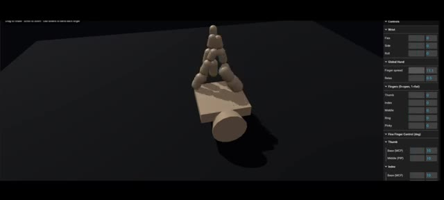
🔍 Agrandir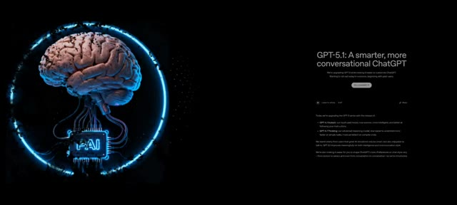
🔍 Agrandir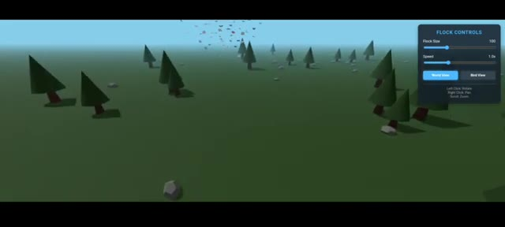
🔍 Agrandir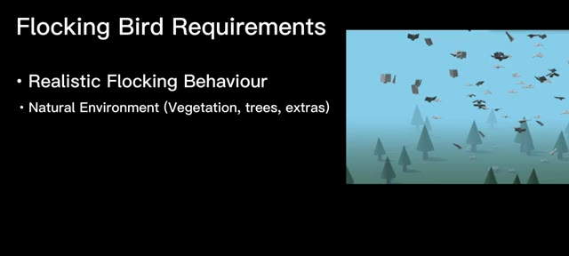
🔍 AgrandirIl devrait également inclure un mode de vue d'oiseau où la caméra suit un oiseau sélectionné ainsi que des commandes de base telles que l'ajustement de l'intensité du vol et le changement de vue de la caméra. Et toute la scène doit être construite en utilisant 3.js plus toutes les bibliothèques d'animation compatibles. Voici le résultat d'Opus 4.5.
Interface & Outils : Présentation vidéo avec diapositive textuelle et interface utilisateur de simulation 3D interactive (panneau de contrôle de la simulation avec curseurs et boutons).
Contenu textuel & Code : Texte à l'écran : « Flocking Bird Requirements », « Realistic Flocking Behaviour », « Natural Environment (Vegetation, trees, extras) », « Bird View Mode ». Sur l'image 2, le panneau affiche « Bird Flocking Simulation », « Flock Size », « Simulation Speed », « Camera View » (World View / Bird View), et des boutons « Pause » et « Reset Flock ».
Action / Démonstration : Affichage des exigences de développement de la simulation 3D, puis démonstration du résultat interactif généré par Opus 4.5 montrant un paysage arboré en 3D avec des oiseaux en vol et une interface de contrôle.
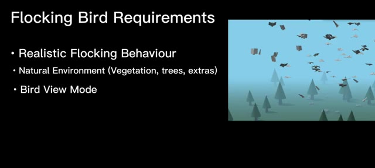
🔍 Agrandir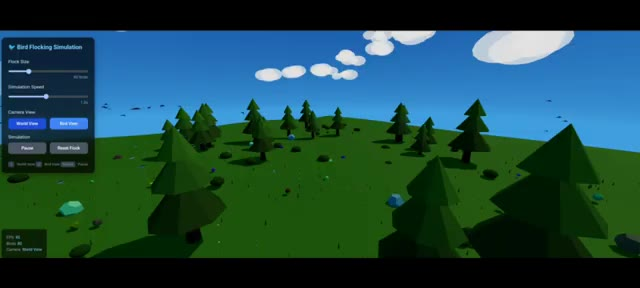
🔍 AgrandirIl génère le monde tel qu'il lui est demandé, avec de la verdure et de la végétation. Mais regardez les oiseaux. Ils ont de grandes queues. Et depuis la vue en contre-plongée, ils ressemblent à des oiseaux en papier plié. La caméra bouge aussi beaucoup trop et ceci est généré par GPT 5.1, le monde est formidable mais les oiseaux ne le sont pas, leur mouvement de vol en groupe n'est pas très réaliste et les formes des oiseaux ont l'air bizarres et ceci est généré par Gemini 3, il est plus grand que les mondes générés par les autres modèles. L'oiseau rouge est le principal oiseau utilisé pour le mode vue d'oiseau. Cependant, le mouvement de vol en groupe n'est toujours pas aussi bon que prévu.
Interface & Outils : Interface de simulation interactive en 3D (panneau de contrôle 'Bird Flocking Simulation' / 'Flock Controls' avec curseurs de taille de vol et de vitesse, options 'World View' et 'Bird View').
Contenu textuel & Code : Texte visible sur les interfaces : 'Bird Flocking Simulation', 'Flock Size', 'Simulation Speed', 'Camera View', 'World View', 'Bird View', 'Simulation', 'Pause', 'Reset Flock', et 'FLOCK CONTROLS'.
Action / Démonstration : Navigation et démonstration d'une simulation interactive en 3D représentant un monde low-poly avec des arbres et des oiseaux en mouvement, en ajustant les paramètres de la caméra et du vol.
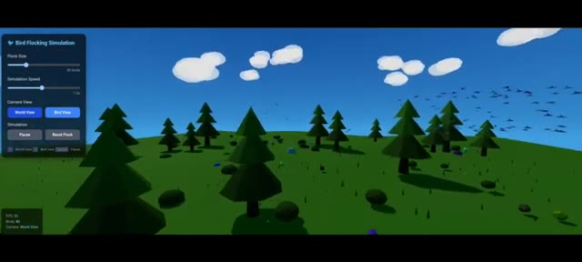
🔍 Agrandir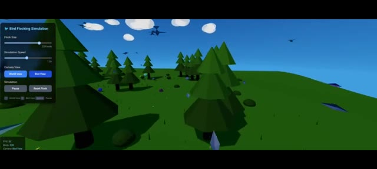
🔍 Agrandir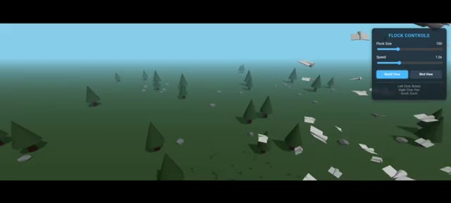
🔍 AgrandirEnsuite, j'ai exécuté une simulation de spirographe. Les exigences étaient une rotation continue, plusieurs options de formes, des contrôles de couleur et d'autres fonctionnalités de base. Voici le résultat d'Opus 4.5. Il génère la simulation de spirographe comme prévu. Je peux choisir différentes formes, couleurs, et une section d'animation où je peux ajuster la vitesse de dessin, l'épaisseur des traits, la taille de l'engrenage fixe, la taille de l'engrenage mobile, la distance du crayon et les rotations.
Interface & Outils : Interface de démonstration de "Spirograph Studio" générée par une IA (Opus 4.5), avec des panneaux latéraux pour les préréglages de design, les animations et les paramètres d'engrenage.
Contenu textuel & Code : Texte à l'écran : "Spirograph Simulation", "Continuous Rotation", "Multiple Shapes", "Colour Controls", "Other Basic Features", "DESIGN PRESETS" (Flower, Star, Mandala, Galaxy, Lotus, Vortex, Snowflake, Atom, DNA Helix, Chaos, Heart, Custom), "ANIMATION" (Drawing Speed 1.0x, Line Thickness 2px), "GEAR PARAMETERS" (Fixed Gear (R) 200, Moving Gear (r) 75, Status: Drawing..., Progress: 68.5%, Points: 365).
Action / Démonstration : Présentation des résultats de la simulation de spirographe et affichage des paramètres de contrôle de l'application.
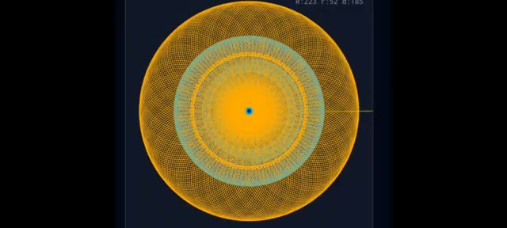
🔍 Agrandir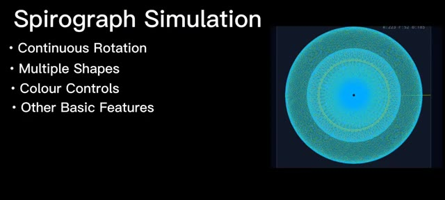
🔍 Agrandir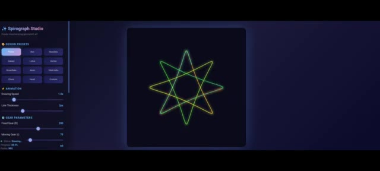
🔍 AgrandirIl offre également des options supplémentaires comme l'affichage et le masquage des engrenages, un bouton d'activation de l'effet de lueur, l'atténuation de la traînée, la pause, le redémarrage, l'effacement et un bouton de sauvegarde qui enregistre réellement le design créé. Une petite erreur, il ne tourne pas en continu. Il s'arrête après avoir généré la forme complète. C'est la génération de GPT 5.1.
Interface & Outils : Application web interactive de type "Dynamic Spirograph Studio" générée par IA.
Contenu textuel & Code : Panneaux de configuration avec des curseurs (Gear Parameters, Fixed Gear, Moving Gear, Pen Distance, Rotations, Drawing Speed, Line Thickness), palettes de couleurs, boutons de contrôle (Pause, Restart, Save) et affichage d'un tracé géométrique lumineux.
Action / Démonstration : Démonstration des fonctionnalités de l'interface avec affichage des paramètres de configuration et visualisation de la génération d'un motif de spirographe lumineux.
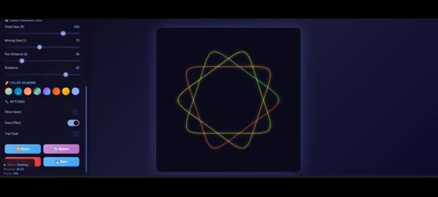
🔍 Agrandir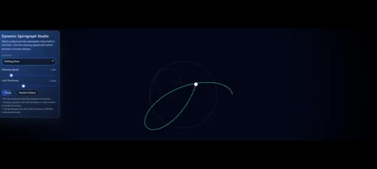
🔍 AgrandirIl ne génère pas beaucoup d'options. Je peux modifier la forme, la vitesse de dessin et l'épaisseur des traits, et il y a des boutons de redémarrage et de pause. Il s'arrête également après avoir généré un diagramme complet. Et voici le résultat de Gemini 3. Il a l'air bien, et quand je l'essaie, il comprend différentes formes, couleurs et contrôles de vitesse.
Interface & Outils : Application web "Dynamic Spirograph Studio" avec panneaux de contrôle latéraux et zone de visualisation graphique centrale.
Contenu textuel & Code : Texte "Dynamic Spirograph Studio", curseurs "Drawing Speed", "Line Thickness", "Simulation Speed", "Outer Radius (R)", "Inner Radius (r)", "Pen Offset (d)", boutons "Pause", "Restart Pattern", et options de design rapide ("Classic", "Starflower", "Dense Mesh", "Hypnotic", "Loops").
Action / Démonstration : Démonstration de l'application web montrant le tracé dynamique d'une courbe spirographe et la modification des paramètres de configuration.
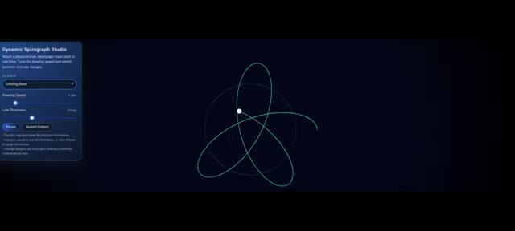
🔍 Agrandir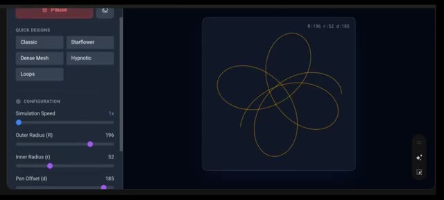
🔍 AgrandirEt elle possède une fonctionnalité que GPT 5.1 et Opus 4.5 n'ont pas pu générer. Une rotation continue. Si je zoome sur la forme, vous pouvez clairement la voir tourner sans s'arrêter. Exactement ce dont j'avais besoin. J'adore cette génération Gemini 3. Ensuite, c'est la simulation de main. La condition est simple.
Interface & Outils : Interface web de simulation et de génération 3D interactive (outil de modélisation/simulation géométrique et articulée).
Contenu textuel & Code : Menus de configuration : "Quick Designs" (Classic, Starflower, Dense Mesh, Hypnotic, Loops), "Simulation Speed: 79x", "Outer Radius (R): 196", "Inner Radius (r): 52", "Pen Offset (d): 185". Commandes 3D pour la simulation de main : "Controls", "Wrist", "Global Hand", "Fingers", "Fine Finger Control".
Action / Démonstration : Le créateur présente une forme géométrique en rotation continue, puis effectue un zoom avant pour montrer les détails de la texture, avant de passer à une interface de simulation 3D de main articulée.
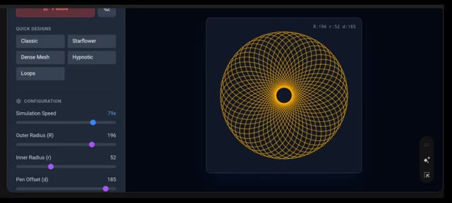
🔍 Agrandir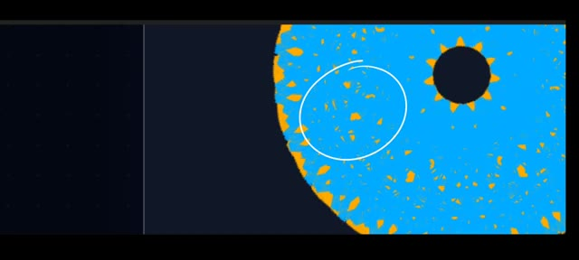
🔍 Agrandir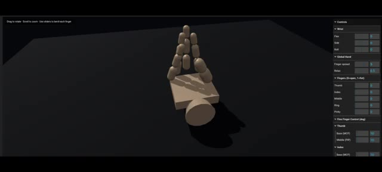
🔍 AgrandirJe devrais être capable de contrôler tous les doigts de la main. Rien de plus. C'est le résultat d'Opus 4.5. Honnêtement, je pense que je devrais rire très fort. Parce que les gens disent que l'IA va leur voler leur travail, mais là, qu'est-ce que c'est que ce truc généré ? Je suis choqué. Ça génère bien des contrôles pour tous les doigts, et ils fonctionnent, mais regardez juste la main.
Interface & Outils : Interface de visualisation et de contrôle 3D avec des panneaux de réglages sur le côté droit (Wrist, Global Hand, Fingers, Fine Finger Control).
Contenu textuel & Code : Textes visibles dans l'interface : "Drag to rotate", "Scroll to zoom", "Use sliders to bend each finger", "Controls", "Wrist", "Global Hand", "Fingers (0=open, 1=flat)", "Thumb", "Index", "Middle", "Ring", "Pinky", "Fine Finger Control (deg)".
Action / Démonstration : Le créateur montre le rendu 3D d'une main rudimentaire composée de blocs et de cylindres, dont les proportions et l'apparence générées par l'IA sont anormales, ainsi que les curseurs de contrôle associés.
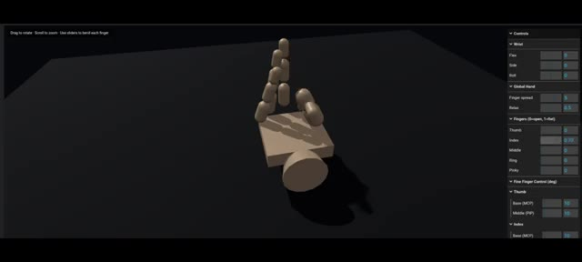
🔍 AgrandirC'est trop bizarre. Opus 4.5 a vraiment fait un truc bizarre ici. Ensuite, c'est la génération de GPT 5.1. C'est bien mieux qu'Opus 4.5. Regardez la paume. Ça a l'air réaliste. Je peux contrôler tous les doigts à l'aide de curseurs et tout fonctionne. Une erreur que j'ai remarquée : lorsque l'on plie les doigts, ils vont trop loin sous la paume au lieu de s'arrêter à la paume. Mais dans l'ensemble, ça a l'air bien et réaliste, et ça, c'est la génération de Gemini 3. Ça a l'air vraiment bien aussi. Ça génère une main robotique et je peux contrôler tous les doigts à l'aide de curseurs, tout fonctionne et elle bouge comme une vraie main humaine, et remarquez le pouce.
Interface & Outils : Interface de simulation 3D interactive de modélisation de mains avec panneaux de contrôle par curseurs (sliders) et boutons de configuration.
Contenu textuel & Code : Textes visibles : "Realistic Hand Simulation", "Left Hand", "Right Hand", commandes des doigts ("THUMB", "INDEX", "MIDDLE", "RING", "PINKY"), préréglages ("Fist", "Open", "Peace", "Rock", "Thumbs Up", "Point"), et paramètres de contrôle de la main et du poignet ("Wrist", "Global Hand", "Fingers", "Fine Finger Control").
Action / Démonstration : Démonstration de simulations de mains 3D interactives où les doigts et les mouvements sont contrôlés via des curseurs et des boutons d'interface.
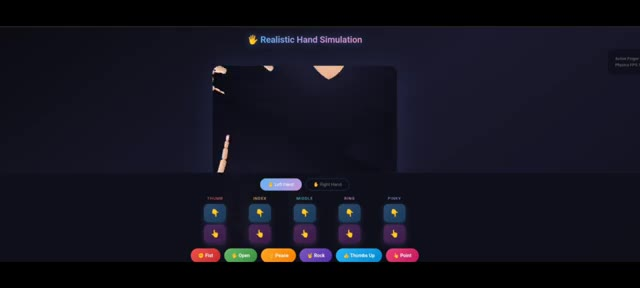
🔍 Agrandir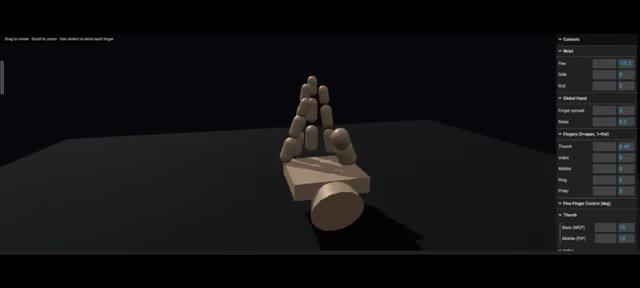
🔍 Agrandir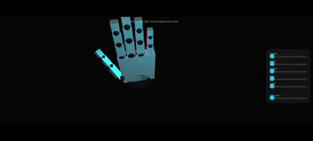
🔍 AgrandirÇa bouge de façon réaliste aussi. C'est la recherche pour la vidéo d'aujourd'hui. Si vous avez aimé, mettez un pouce bleu, abonnez-vous et laissez un commentaire.
Interface & Outils : Interface de démonstration 3D avec des curseurs de contrôle sur le côté droit (Thumb, Index, Middle, Ring, Pinky, Pitch/Yaw) et le logo "PAI" dans un cercle lumineux bleu à gauche.
Contenu textuel & Code : Texte affiché en haut : "Drag controls. Left drag on blank space background to rotate". Curseurs de contrôle pour chaque doigt (Thumb, Index, Middle, Ring, Pinky) et l'orientation (Pitch/Yaw). Logo "PAI" sur un processeur connecté à un cerveau dans un cercle lumineux.
Action / Démonstration : Présentation d'un modèle 3D interactif d'une main robotique permettant de tester et de visualiser les mouvements et l'articulation des doigts.
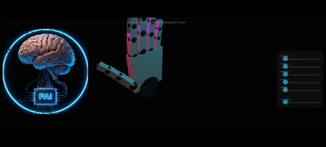
🔍 Agrandir